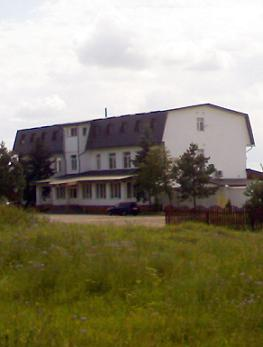

Гостиница ФАМП Калязин.
Адрес гостиницы Фамп: г. Калязин, ул. Заводская, д. 17, Телефоны: 8 (48249) 2-55-95, 2–55–91.Гостиница «ФАМП» — это современный мини отель с уютным баром-рестораном, построенный в 2009 году в одном из старинных городов Тверской земли, в городе Калязин. За небольшой промежуток времени гостиница стала популярной не только у гостей города, но и у местных жителей. Они с удовольствием справляют праздники и свадьбы в баре-ресторане. Относительно либеральные цены и высокое качество обслуживания стали визитной карточкой данного заведения.
Номерной фонд отеля составляет 30 номеров. В них могут одновременно разместиться до 60 человек. Площадь и оснащение номеров соответствуют международным нормативным требованиям. Основными посетителями отеля являются организованные туристические группы и корпоративные клиенты. Для возможности размещения организованных групп туристов в отеле имеется достаточное количество однотипных номеров. Атмосфера комфорта, высокий уровень обслуживания, безопасности и индивидуальный подход к каждому гостю отличительные черты гостиницы.
Личный автотранспорт можно оставить на охраняемой парковке, наблюдение за которой осуществляется непосредственно собственной службой охраны и системой видеонаблюдения. В нескольких метрах от парковки находится автомойка, где можно привести в порядок свой автомобиль.
Стоимость номеров в гостинице Фамп составляет от 1500 руб. за сутки, номер люкс от 3500 руб. Более подробную информацию вы всегда сможете узнать по телефонам указанным в начале нашей заметки. Для избежания недарозумений, пожалуйста, заранее узнавайте о свободных номерах, так как в городе Калязин работает всего одна гостиница. Надеемся Вам понравится наш город и вы останетесь довольны отдыхом.
Рядом с отелем расположено кафе «Визит», где можно отведать блюда кавказской и европейской кухни. Гости закусочной остаются довольными большим выбором различных мясных блюд: хачапури, люля, шашлыки, аджахури, мясная солянка и многое другое. Относительно быстрое обслуживание, блюда из свежих продуктов и учтивый персонал это визитная карточка данного кафе.
|  Почтовые индексы Почтовые индексыгорода и района. |
|


| Раздел посвящен любителям рыбной ловли на территории Калязинского района. Здесь вы узнаете, что и где можно поймать, а также мы расскажем, в каких речках водятся настоящие раки. |
Аренда катеров, лодок, водных велосипедов, мотоциклов, стоянка для маломерных судов, заправка и техническое обслуживание. Незабываемые водные развлечения для всей семьи! Работает летнее кафе. |